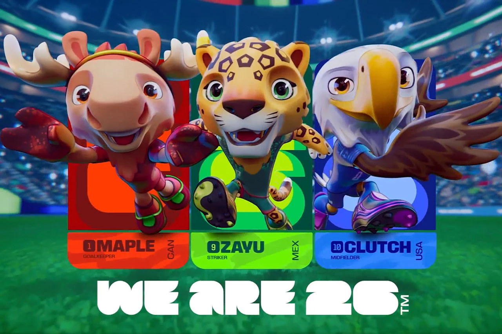

00
Dias
00
Horas
00
Minutos
00
Segundos
◀️Copa do Mundo 2026
Esse countdown representa quanto tempo falta até a abertura da Copa do Mundo de 2026 Fifa World Cup 2026, que foi hospedadada em três países diferentes nesse ano:
- México
- Estados Unidos
- Canadá
Diferente das outras copas, esta Copa terá 48 seleções disputando pelo título, 16 mais comparado ao padrão antigo (32 seleções); um aumento de 50%.
Os mascotes serão:
